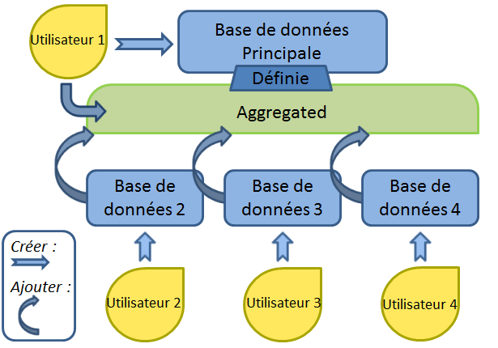

MLVABank
Bases de données internet de genotypage

par Christophe Tourterel
Objectifs
- Pouvoir représenter ses données de typage :
-
- VNTR (MLVA)
- MLST
- SNP
- Spoligotyping
- CRISPR
- Gérer des données de typage
- Rendre accessible des données de typage via internet
- Comparer des échantillons sur les bases de données
- Générer automatiquement les génotypes des données
- Créer des projets collaboratifs grâce à l’agglomération de bases autonomes
Principes

Création
- Matériel requis : Connexion, un fichier csv
- Peu de manipulations (minimum de 6 clics)
- Plusieurs options ajoutables (géolocalisation, panel...)
- Création rapide de bases de données
Importer
CSV:
Resultat:
- Choix des options (géo,panel,etc...)
- Selection rapide des types de données
Exploitation
- Visualiser les bases de données complètes
- Rechercher les souches les plus proches
- Représenter les géolocalisations et les arbres
Visualiser

- Masquer, trier les colonnes
- Modifier l'affichage des données (octal, lien...)
Rechercher
- Masquer les colonnes et les génotypes identiques
- Modifier l'affichage des données (octal, nom et commentaire des génotypes)
Représenter
- Les géolocalisations
- Les dendrogrammes
Gestion
- Editer les souches, les marqueurs
- Panels et Génotypes
- Partager et rendre publique
Éditer

- Modifier les metadata, les marqueurs...
- Maîtriser les données : ajout, modification et suppression
Classifier
- Créer des panels pour regrouper des marqueurs
- Génération et gestion automatique des génotypes
Partager

- Partager des données avec d'autres utilisateurs
- Rendre une base de données publique
- Masquer l’existence de certaines bases
Agrégation
- Agréger plusieurs bases de données
- Mise en commun et interaction
- Contrôle de vos données
Agréger
- Créer votre propre "Aggregated"
- Collaborer avec une base de données déjà existante
Fusionner
- Mise en commun de l'ensemble des bases de données d'une "Aggregated"
- Accès aux différents éléments simultanément (géolocalisation, query...)
Contrôler
- Mise à jour automatique de vos données sur l'aggregated
- Enlever les bases non souhaitées de votre aggregated
- Ne plus faire partie d'une aggregated d'un simple clic
Microgeno
Remerciements
Atelier “génotypage de bactéries” du 3 au 5 Juin 2013